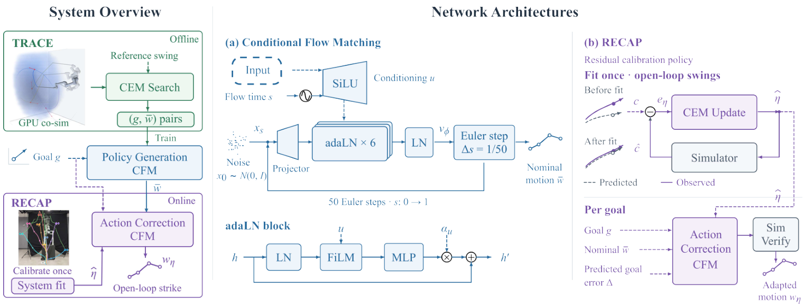
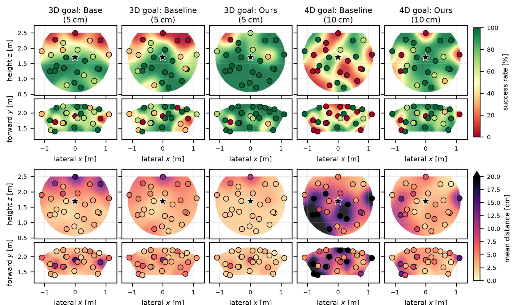
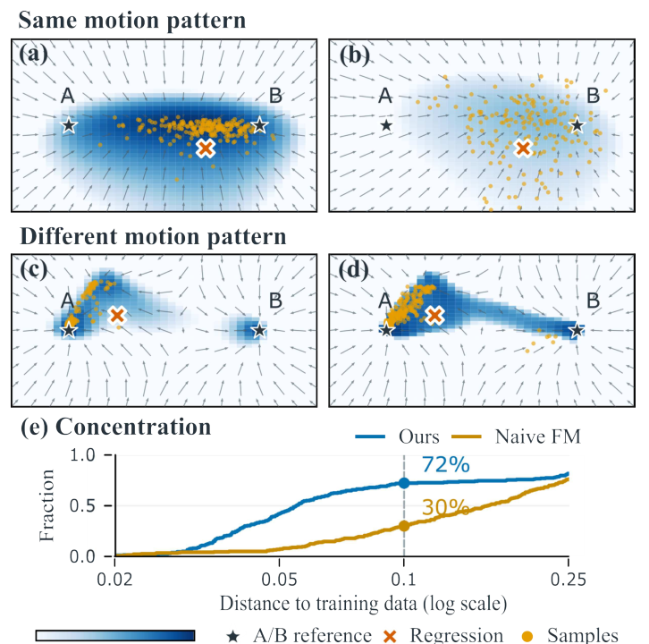

SIMULATION ENGINE
DeformX 2.0
Stable GPU rope dynamics power large-scale motion search and policy evaluation.
One Model: Any rope. Any point. Any direction.
* Equal contribution · † Equal contribution
Real-world position success
Within 5 cm · three-rope meanReal-world position + direction
Within 10 cm and 10° · three-rope meanCalibration swings per rope
Calibrate once, then strike new goalsReal-robot strikes with a green braided rope at different target positions.
Random target positions, measured by motion capture.
Targeted cup strikes with the same green braided rope.
Solver output in an interactive 3D viewer — drag to orbit, shift-drag to pan, scroll to zoom.
Browse
Move a target in 3D, choose the arrival direction, and explore the reachable region.
Interactive preview · simulation backend pending
Drag the point to move · drag X/Y/Z to constrain · drag background to orbit · scroll to zoom.
Task region from DeformY: radius 1.6–2.3 m, cone ±30° about +Y, height 0.3–2.5 m. Actual strike success requires simulation. The gold arrow follows the policy’s local arrival-angle frame.
Simulation service not connected
Choose a target and arrival direction. Generated replays will be available once the simulation service is connected.
Generate strike data, learn a base policy, and adapt to a real rope with eight calibration swings.
Stable GPU rope dynamics power large-scale motion search and policy evaluation.
Grow a dataset of strikes across target points and arrival directions through simulation-based motion search.
Learn a conditional flow-matching base policy that generates nominal swings from target position and arrival direction.
Calibrate once with eight swings, fit the real rope, then correct and select actions for new goals.
01 / 03 · TRACE
25 targets × 3 swings per rope. One calibration, then a single strike per goal.
Success within 5 cm of the target.
Base: candidate selection in the nominal simulator. RECAP: fitted simulator with action correction. Values from Table II. 4D success additionally requires at least 1 m/s velocity along the commanded direction.
A rope tip can reach the same point from very different directions. We learn to control both: a 3D target position and a 1D arrival angle.
Our framework generates striking motions in simulation, learns multiple ways to reach a goal, and adapts to a real rope through eight calibration swings. Once calibrated, the robot executes a single strike for each new goal without repeated real-world attempts.
The arrival angle is measured after projecting the tip velocity onto the tangent plane of the arm-centered sphere; it is not a free 3D orientation. Goals are evaluated within the robot’s reachable workspace.
From a physics simulator to a direction-conditioned strike on real hardware.
A GPU-accelerated Cosserat rod solver with cross-flow aerodynamic drag supports parallel rope simulation and motion search.
Starting from one manually tuned swing verified on hardware, TRACE warm-starts each new search from the stored tip path closest to the goal—not simply the closest previously solved target. A conditional flow-matching policy learns distinct swings, with the goal injected into every residual block.
Eight swings identify rope and rig parameters. A simulation-trained correction policy proposes actions, and the fitted simulator selects the best candidate.

¹ Reported throughput relative to DeformX, with 8,192 parallel environments on an RTX 4090. See Table I in the paper for the benchmark setup.
RECAP fits 11 rope and rig parameters to motion-captured rope-tip trajectories. It then generates eight corrected actions and compares them with the nominal action in the fitted simulator.
The robot executes the best candidate. The correction policy is trained in simulation; calibration is performed once per rope, and execution has no online feedback.
| Method | 3D ≤ 5 cm | 4D ≤ 5 cm, 10° | 4D ≤ 10 cm, 10° | 4D mean miss |
|---|---|---|---|---|
| Base | 72% | 28% | 50% | 10.6 cm |
| Learned identification baseline | 74% | 28% | 51% | 10.2 cm |
| RECAP | 87% | 52% | 79% | 5.6 cm |
The learned identification baseline follows the paper’s Wiggle&Go-style parameter estimator with candidate selection and no action correction. All 4D success rates also require ≥ 1 m/s along the commanded direction.

A successful tip trajectory contains useful starting points for many nearby goals.
TRACE searches from the closest stored tip path, penalizes bending and abrupt tip motion, refines neighboring solutions, and relabels successful trajectory segments with their achieved goals. This creates consistent goal–action pairs without a human demonstration corpus.
| Generator | Coverage | One-shot | Best-of-64 |
|---|---|---|---|
| CEM with example | 49.5% | 58.5% | 68.5% |
| TRACE without example | 96.8% | 75.5% | 83.9% |
| TRACE | 98.3% | 73.5% | 92.1% |
Coverage measures solved generation targets. The example-free variant has higher one-shot accuracy; full TRACE provides higher coverage and stronger accuracy after candidate selection.
Distinct swings can reach the same target. A generative policy preserves these alternatives instead of averaging them into an invalid motion.
Goal and flow-time conditioning enter every residual block through zero-initialized modulation. At inference, 64 candidates are sampled with 50 Euler steps and ranked in simulation.

| Method | One-shot | Best-of-64 |
|---|---|---|
| Ours | 73.5% | 92.1% |
| Naive flow matching | 67.9% | 88.9% |
| Regression | 21.4% | — |
| Nearest neighbor | 33.6% | — |
Success within 5 cm and 10°. One-shot evaluates one policy sample; best-of-64 selects a candidate using the simulator. Table III in the paper.
A stable GPU Cosserat rod solver and quadratic cross-flow drag make large-scale search, policy training and candidate verification practical.
The reported >20,000× improvement compares batch throughput at 8,192 environments on an RTX 4090 with the original single-thread CPU DeformX. It does not mean a single environment runs 20,000× faster.
| Engine | Environments | Batch update rate | Sim / wall time |
|---|---|---|---|
| DeformX · CPU, 1 thread | 1 | 12.9 Hz | 0.22× |
| DeformX 2.0 · RTX 4090 | 1 | 136 Hz | 2.3× |
| DeformX 2.0 · RTX 4090 | 8,192 | 34.5 Hz | 4,710× |
The demonstrated task is single-swing rope-tip striking within the tested workspace. It does not yet address sustained contact, obstacle interaction or multi-stage manipulation. Execution remains open-loop after calibration, and transfer may degrade outside the dynamics represented during training.
Position and arrival direction, learned together.